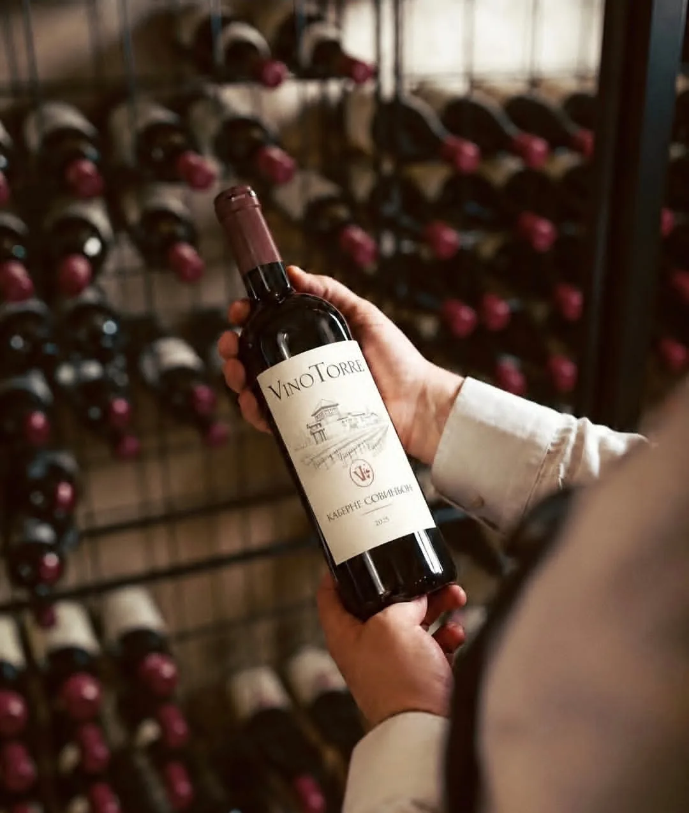
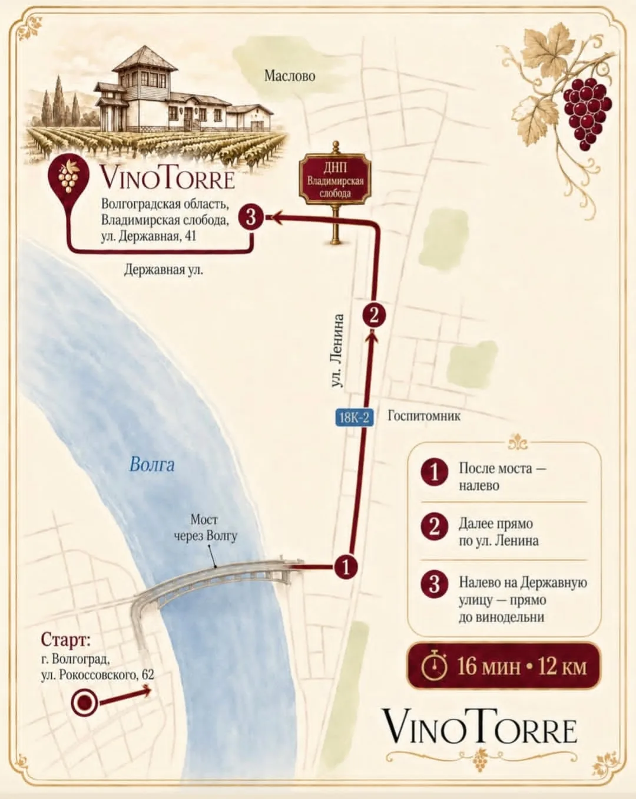

VINOTORRE / ПОСЕЩЕНИЕ
Ближе
к месту.
Волгоградская область.
Владимирская слобода.
Знакомство начинается здесь.

01
ПРИСУТСТВИЕ
Не спешить.
Быть здесь.
Иногда для знакомства с местом достаточно остановиться. Заметить свет, оставить паузу, задать вопрос.
Если вы хотите посетить VinoTorre, заранее уточните возможность встречи и детали визита. Даты и формат посещения согласуются отдельно.
02
КАК ДОБРАТЬСЯ
Точка
на карте.
Волгоградская область,Владимирская слобода,
улица Державная, 41Открыть адрес в навигации
ВОЛГОГРАДСКАЯ ОБЛАСТЬ
Владимирская
слобода
Маршрут и время в пути уточняйте
в навигации перед поездкой.

03
СВЯЗАТЬСЯ
Запрос
о посещении.
Представьтесь, оставьте контакт и расскажите, когда хотели бы приехать. Возможность посещения и детали встречи требуют подтверждения.
Форма подготовит письмо в вашем почтовом приложении. Автоматическая отправка и запись на посещение не выполняются.